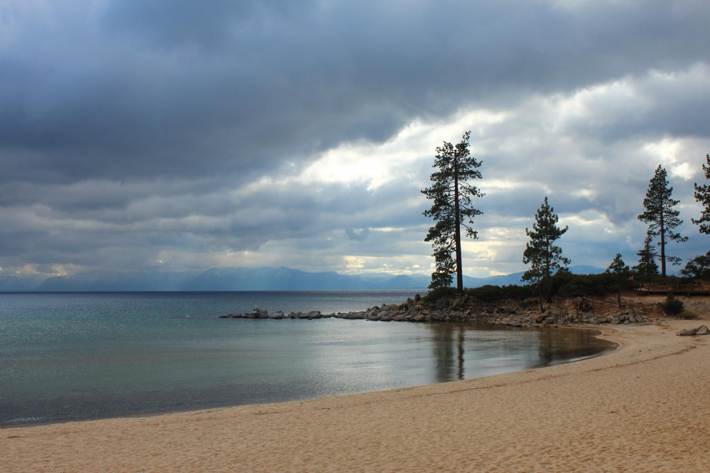
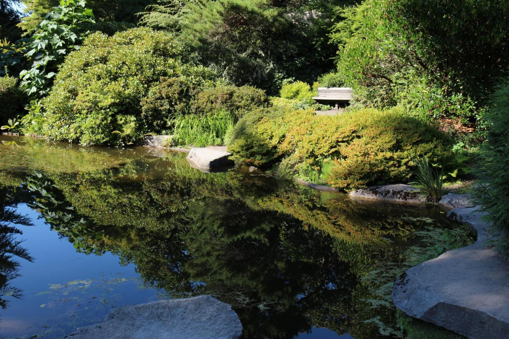

Pictures of Places
This website will illustrate some of the places I've lived with the pictures I've taken that best encapsulate the experience of living there.
Northern Nevada
It's a relief to everyone who has had to live there that Nevada is more than just Las Vegas. Drive nine hours north and you're in the land of high desert, vast sky, and wild horses. The Carson Valley is bound to the West by the Sierras, with Lake Tahoe just forty minutes away.
The Sierra Nevada mountains in winter, Job's Peak featured at center:
Wild horse siblings from a small herd near the Pinenut Hills:
Lake Tahoe viewed from its best swimming location, Sand Harbor:

A cottontail rabbit in strong wind:
Central Pennsylvania
The best description I ever read of Pennsylvania described rolling green hills dotted with coal mines like cigarette burns. What the area lacks in landscape it compensates with a deep appreciation of history.
Runoff from a coal mine taints a local stream:
A Civil War reenactment group prepares to camp in Old Bedford Village, a living history museum:
Reenactors portraying Union army generals start their day:
A covered bridge at the outskirts of Old Bedford Village:
Seattle, Washington
Seattle is a beautiful city. Puget Sound and Lake Washington render it nearly surrounded by water, the novelty of which I suspect will never decrease for me. One of the best things about Seattle is its proximity to a variety of state and national parks.
Seattle skyline from the Bainbridge ferry:
Part of Woodland Park Zoo's annual Wild Lights installation:

Olympic Mountains viewed from Hurricane Ridge in a dry year:
Kubota Garden, a Japanese style garden planted with florae native to the Pacific Northwest:

I can't believe you made it all the way down. No refunds.